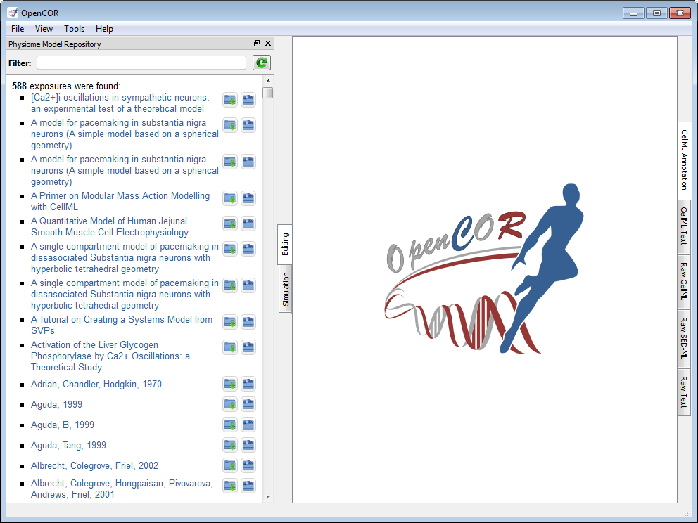
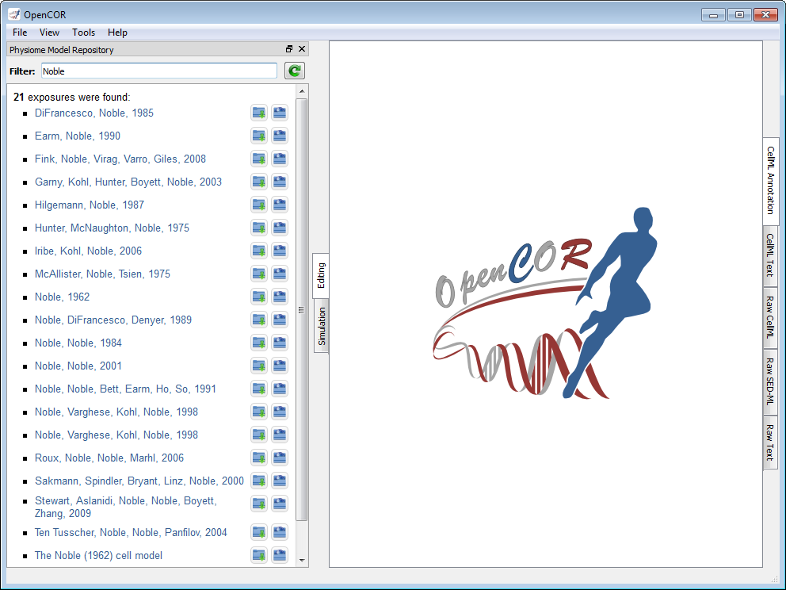

The PMRWindow plugin offers an interface to the Physiome Model Repository (PMR). By default, it lists all the published exposures found in PMR:

The list can be filtered. For example, to enter Noble as a filter gives:

To click on any of the listed links will open the latest published exposure for that model in your (default) web browser. For example, to click on the Noble, 1962 link sends you here. From there, you can, for example, retrieve the workspace for that model, which in the present case can be found here.
A workspace can be cloned by clicking on the  button next to the exposure link. This will require providing the location of an empty folder (where the workspace will be cloned).
button next to the exposure link. This will require providing the location of an empty folder (where the workspace will be cloned).
An exposure may contain one or several files, which can be shown/hidden by clicking on the  button:
button:

Any of those exposure files can be opened in OpenCOR by simply clicking on it.